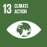
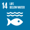
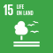

BE08: Operational Encroachment
Operations do not encroach on ecosystems or communities
1. Ambition
A Future-Fit Business preserves the health of all areas of high biological, ecological, social or cultural value – both by protecting them where the company is already active, and by avoiding further expansion into new areas if degradation is possible.79
1.1 What this goal means
Growing demand for land is putting pressure on ecosystems, communities and plant and animal species. Companies that do not adequately consider the impacts of their physical presence may cause irreversible degradation to natural processes and resources that they and others rely on, and may undermine the wellbeing of local communities.
The purpose of this goal is to eliminate the negative impacts of business on natural ecosystems and communities. This includes but is not limited to:
- Respecting the land rights of communities (e.g. zero tolerance on land grabbing).
- Protecting aquatic ecosystems from degradation (e.g. avoiding coral reefs).
- Protecting areas of high biodiversity value (e.g. no clearing of rainforest for farmland).
- Not encroaching on areas of cultural importance (e.g. oil pipelines running through regions considered sacred by Indigenous Peoples).
To be Future-Fit, a company must: (a) protect such areas where it is already present, and (b) take steps to avoid or mitigate negative outcomes when moving into new areas.
1.2 Why this goal is needed
As with all Future-Fit Break-Even Goals, a company must reach this goal to ensure that it is doing nothing to undermine society’s progress toward an environmentally restorative, socially just, and economically inclusive future. To find out more about how these goals were derived based on 30+ years of systems science, see the Methodology Guide.
These statistics help to illustrate why it is critical for all companies to reach this goal:
- Deforestation, often caused intentionally to convert land for commercial use, is a major contributor to climate change and biodiversity loss. 46-58 thousand square miles of forest are lost each year—equivalent to 48 football fields every minute. [85]
- It’s not just land that is vital to protect. Globally, some 275 million people live within 30km of a coral reef, relying on complex food chains that begin in the crevices of the reefs. Even though reefs occupy a modest 0.2% of marine surface area, they provide food and shelter to around a third of marine species. [86]
1.3 How this goal contributes to the SDGs
The UN Sustainable Development Goals (SDGs) are a collective response to the world’s greatest systemic challenges, so they are naturally interconnected. Any given action may impact some SDGs directly, and others via knock-on effects. A Future-Fit Business can be sure that it is helping – and in no way hindering – progress towards the SDGs.
Companies may contribute to several SDGs by ensuring operations do not encroach on ecosystems or communities, and actively encouraging their suppliers to do the same. But the most direct links with respect to this goal are:
| Link to this Break-Even Goal | |
|---|---|
 |
Support efforts to ensure people have equal rights to economic and natural resources, as well as ownership/control over land and other property. |
 |
Support efforts to protect water-related ecosystems. |
 |
Support efforts to enhance inclusive and sustainable urbanization and strengthen efforts to protect and safeguard the world’s cultural and natural heritage, and to reduce the adverse per capita environmental impact of cities. |
 |
Support efforts to strengthen resilience and adaptive capacity to climate-related hazards and natural disasters in all countries. |
 |
Support efforts to sustainably manage and protect marine and coastal ecosystems to avoid significant adverse impacts by strengthening their resilience. |
 |
Support efforts to ensure the conservation and sustainable use of terrestrial and inland freshwater ecosystems, efforts to halt deforestation and combat desertification, efforts to ensure the conservation of mountain ecosystems and reduce the degradation of natural habitats, and efforts to halt the loss of biodiversity and protect and prevent the extinction of threatened species. |
2. Action
2.1 Getting started
Background information
Companies need to be conscious of the ways in which their operations may affect their physical surroundings. Buildings, land use, and other aspects of doing business might interfere unexpectedly with local communities and ecosystems. Governments and other land owners have not been historically consistent in factoring the value of cultural or natural significance into land claims and sales, so companies may have lacked the data they need to consider such issues in their operating plans and infrastructure investments.
Companies should therefore establish a baseline understanding of the communities and natural areas they impact. The first steps toward future-fitness are to examine whatever controls the company has in place to manage its impact on its physical surroundings, to identify any common concerns its industry faces (including region-specific ones) with regard to its physical presence, and to understand local concerns at each location. From there, it can plan next steps and pursue opportunities for improvement.
Questions to ask
These questions should help you identify what information to gather.
In which areas does the company have a physical presence?
- Where are its facilities and other fixed assets located? How many facilities does it have? What type of activities take place in each of those locations?
- Does the company manage and/or harvest natural resources in or close to significant areas80 or sites?
- What is known about the areas surrounding each of the company’s locations? Are any sites in or near protected areas, pristine ecosystems or endangered natural habitats?
- Are there any internal controls in place to limit the impact the company’s operations have on its surroundings?
- What is the approach taken when the company is looking to expand existing facilities, or move into a new location? How are communities or natural settings factored in? Is this treated as a compliance issue or does the company have more ambitious targets?
- Does the company need permission to operate in any locations (e.g. from local authorities or communities)? If so, what is the process for obtaining permission?
How does the company’s presence influence the local environment and communities?
- In each location, what kinds of physical disruption are caused by the company’s operations? What steps are taken to reduce or mitigate this disruption?
- What key inputs does the company rely on to operate in each location – such as water, energy, or chemicals? Is the use of these inputs likely to be a subject of concern for communities or ecosystems (e.g. fertilizer run-off harming aquatic life)?
- Is the company subject to any environmental regulations relating to its physical operations? How does this vary across locations?
- Have organizations, research institutions or authorities raised concerns regarding typical industry practices? If so, has the company taken steps to address them?
- Are local organizations actively highlighting issues associated with the company’s physical presence or practices? If so, has the company interacted or consulted with them regarding its past, current or future activities?
How to prioritize
These questions should help you identify and prioritize actions for improvement.
What are the best opportunities for the company to make progress?
- Has the company identified areas of high ecological, social or cultural value which its physical presence might affect? In which locations is the company’s presence most disruptive?
- In which locations is there a high potential for reputational risk if management practices do not improve?
- Do opportunities exist to collaborate with local groups or other companies on how to tackle shared challenges?
Does the company have any existing targets to reduce the negative impacts of its physical presence?
- If commitments exist, are they enough to meaningfully reduce negative impacts and achieve future-fitness over time? If they are insufficient, how might they be adjusted or supplemented?
- If no targets currently exist, how can the company approach establishing new or additional targets? Whose authorization would be needed? What people and resources would be required to design and implement controls to ensure that the targets are reached?
Could the company find ways to exceed the requirements of this goal?
- Beyond what is required to reach this goal, is the company able to do anything to ensure that our physical presence protects the health of ecosystems and communities?81 Any such activity can speed up society’s progress to future-fitness. For further details see the Positive Pursuit Guide.
The next section describes the fitness criteria needed to tell whether a specific action will result in progress toward future-fitness.
2.2 Pursuing future-fitness
Introduction
Fitness must be assessed on a per-site basis. That is, all facilities and fixed assets owned or controlled by the company must be evaluated against the fitness criteria.82
Applicability of transportation routes
While transportation routes and mobile assets can also have numerous detrimental effects on ecosystems or communities, these are determined to be out of scope for this goal for the following reasons:
Transportation routes (roads, shipping lanes, commercial air tracks) are usually determined by government bodies and are not within the control of the company.
While disturbances caused via noise and vibration might be disruptive to communities or ecosystems, there is no clear consensus on how to effectively measure such impact.
Note however that service roads should be included in the assessment if: they are built or contracted by the company; and/or their sole or primary purpose is to support the company’s operational activities.
Once the fitness of all sites has been assessed, it is possible to calculate the company’s progress towards future-fitness. This step is described in detail in the Assessment section.
Guidance on identifying areas of high biological, ecological, social or cultural value
The company must identify the ways in which its operations physically interact with ecosystems or communities. Current and future sites must be assessed according to the following requirements:
- Gather information on the key social and ecological features of the surrounding landscape. The HCV Resource Network provides useful guidance. The assessment should not focus exclusively on the location of the site itself, but extend to include the context of the wider landscape, such as activities that take place in neighbouring areas, the way other land is used in the region, nearby areas designated as protected, and downstream water bodies. [49] See Additional resources for identifying significant sites for a list of other useful resources.
- If an aspect of the company’s operations is found to be near an area of significance, identify whether the company’s presence has already impacted it, or is likely to do so in the future.
Fitness criteria
To be Future-Fit, the company must live up to the following criteria, for all company-owned or controlled facilities and fixed assets.
Assessing all sites where the company has a physical operational presence
- For each site, identify the local communities and natural ecosystems that are likely to be affected by the company’s presence, and any ways the company’s operations negatively impact them or are likely to do so in the future.
- Determine if the affected areas are of high cultural or ecological value (see Guidance on identifying areas of high biological, ecological, social or cultural value).
Protecting identified communities and ecosystems
- The characteristics, functions, diversity and state of preservation of each area of high ecological, social or cultural value must be protected from negative impacts arising from the company’s presence.
- No activities whatsoever must occur in (or close enough to affect) pristine ecosystems, such as primary forests and wetlands.83
- If a company operates in an area with a historical precedent for land grabbing, it must verify that its site was not subject to land grabbing. This means that:
- The right to own or operate on the land is not contested by local communities who either have documented claims or whose use of the land has historical precedent.
- Activities on land used by or adjoining to communities are subject to the free, prior and informed consent of those communities.
Restoring past damage
The company is required to restore any significant area previously affected by the development of a site by a third party, if the company later comes to control that site (e.g. if a business cleared primary forest to make way for a palm oil plantation, which the company then acquires). Halting such degradation is not enough: the company must take all possible steps to neutralize the site’s earlier impacts (e.g. through reforestation).84
A company is not required to restore any significant area degraded by factors beyond its control and from which it does not benefit. This includes areas affected by natural disasters, climate change, and the actions of third parties with whom the company does not have – and has never had – a commercial relationship (e.g. public infrastructure projects, indigenous settlements).
3. Assessment
3.1 Progress indicators
The role of Future-Fit progress indicators is to reflect how far a company is on its journey toward reaching a specific goal. Progress indicators are expressed as simple percentages.
A company should always seek to assess its future-fitness across the full extent of its activities. In some circumstances this may not be possible. In such cases see the section Assessing and reporting with incomplete data in the Implementation Guide.
Assessing progress
This goal has one progress indicator. To calculate it the following steps are required:
- Assess fitness of each company-owned or controlled site.
- Calculate progress across all sites.
Assessing the fitness of a site
A site is 100% fit with respect to this goal if all criteria are met, otherwise it is 0% fit.
Calculating company progress
When all sites have been identified and assessed, progress can be calculated as follows:
- Add up the area of each site which lives up to the stated fitness criteria.
- Add up the area of all company-owned or controlled sites.
This can be expressed mathematically as:
\[F=\frac{A_F}{A_T}\]
Where:
| \[F\] | Is the progress toward future-fitness, expressed as a percentage. |
| \[A_F\] | Is the total area owned or controlled by the company which lives up to the fitness criteria. |
| \[A_T\] | Is the total area of land owned or controlled by the company. |
For an example of how this progress indicator can be calculated, see here.
Note on the boundaries of a company’s responsibility
For this goal, a company must assess its own operations (work sites and physical assets) that have a physical impact on their surroundings. While a company may not be wholly accountable for areas or activities controlled by other organizations, it is foreseeable that companies could take advantage of this division by essentially outsourcing particularly disruptive activities to others. The possibility of using corporate structures to deflect responsibility for environmental or social damages is a potential weakness which also exist in the fields of legal and financial liability.
For example, mining companies might pay a specialist organization to decommission old mine sites. This is a reasonable action in itself, but as a matter of business ethics, companies should not be seeking the lowest quote at the expense of the quality of the retirement of the site and associated restoration. Responsible companies will ensure that any negative impacts of their operational activities are dealt with appropriately, either through creating performance-dependent contracts or by working with local groups to identify and address concerns over land use and restoration.
3.2 Context indicators
The role of the context indicators is to provide stakeholders with the additional information needed to interpret the full extent of a company’s progress.
Total area owned or controlled by the company
The company must report the total area of land it owns or controls (including owned or controlled sections of water bodies). Note that this data is required for the progress indicatorcalculation, so no additional effort is required to obtain it.
For an example of how context indicators can be reported, see here.
4. Assurance
4.1 What assurance is for and why it matters
Any company pursuing future-fitness will instil more confidence among its key stakeholders (from its CEO and CFO to external investors) if it can demonstrate the quality of its Future-Fit data, and the robustness of the controls which underpin it.
This is particularly important if a company wishes to report publicly on its progress toward future-fitness, as some companies may require independent assurance before public disclosure. By having effective, well-documented controls in place, a company can help independent assurers to quickly understand how the business functions, aiding their ability to provide assurance and/or recommend improvements.
4.2 Recommendations for this goal
The following points highlight areas for attention with regard to this specific goal. Each company and reporting period is unique, so assurance engagements always vary: in any given situation, assurers may seek to evaluate different controls and documented evidence. Users should therefore see these recommendations as an illustrative list of what may be requested, rather than an exhaustive list of what will be required.
- Ensure that the company has undertaken assessments to identify all areas of high conservation value that might be impacted by its activities, and retain any documentation from these evaluations. This can help assurers to assess whether the company’s approach runs the risk of missing key impact.
- For any identified high conservation value areas, retain documentation of a baseline assessment establishing the characteristics, functions, diversity and state of preservation of these areas to facilitate future comparisons and to create an evidence trail. This baseline may help assurers to support claims of conservation and restoration.
For a more general explanation of how to design and document internal controls, see the section Pursuing future-fitness in a systematic way in the Implementation Guide.
5. Additional information
5.1 Example
ACME Inc. sells lemonade products. Its operations consist of two sites: a bottling plant and an office space. The office space covers 1,500m2 and is located in a shared building in the middle of a city centre, in a long established commercial district. The company’s presence there is assessed, and determined not to have any negative impact on local communities or ecosystems.
The bottling plant spans 10,000m2. It is located in an area of high biodiversity and was built on a previously undeveloped piece of land. The company performs an assessment to understand how its activities have impacted and may still impact local biodiversity. It finds that the area now occupied by the plant was home to several endangered species of songbird, whose populations are suffering from habitat loss. The creation of the factory is determined to have contributed to the reduction of available habitat for these species, and is therefore understood to have negatively impacted the ecosystem. The company therefore measures its performance as follows:
\[f_{Factory}=0\%, \:and\:\: f_{Office}=100\%\]
So:
\[F=\frac{A_F}{A_T}=\frac{1,500}{1,500+10,000}\approx13\%\]
The company then initiates a project in collaboration with the local community to replant native tree species, and to install a ‘living roof’ on its factory, seeded with local flora that the endangered species depend upon. Independent biodiversity specialists are brought in to help encourage and monitor the return of the endangered species, and after five years the verdict is that the company’s negative impact has been reversed.
The company can now calculate its progress as:
\[F=\frac{A_F}{A_T}=\frac{11,500}{11,500}=100\%\]
Context indicator
Total area owned or controlled by the company: 11,500m2.
5.3 Useful links
Additional resources for identifying significant sites
The following third-party resources may prove helpful in identifying significant sites:
- Protected Planet offers comprehensive information on protected areas, updated monthly with submissions from governments, non-governmental organizations, landowners and communities.
- Bird Life International identifies Important Bird and Biodiversity Areas (IBAs).
- Biodiversity A-Z provides clear, concise and relevant information about various topics relating to biodiversity, written and reviewed by experts.
- Natura 2000 is a network of core breeding and resting sites for rare and threatened species, and some rare natural habitat types which are protected in their own right. It stretches across all 28 EU countries, both on land and at sea.
- The Alliance for Zero Extinction identifies and maps those species considered to be Endangered or Critically Endangered (under IUCN-World Conservation Union criteria) which are only present in a single location.
- Wetlands of International Importance, as designated by the Ramsar Convention and certified by UNESCO, lists environmentally-significant wetland areas.
- United Nations Educational, Scientific and Cultural Organization (UNESCO) world heritage sites and biosphere sites are protected areas that are considered to be of outstanding value to humanity because of their significance to our cultural and natural heritage.
HCV Network
The HCV Network offers extensive guidance for identifying areas of High Conservation Value (HCV), including the following excerpts: [49]
Describe the key social and biological features of the wider landscape
This should include information on:
- Protected areas.
- Areas whose regional or sub-regional biogeography is distinct or narrowly restricted.
- Location and status of areas of natural vegetation (including a description of ecosystem types, size, and quality).
- Occurrence of known populations of species of global concern and migration corridors in the landscape.
- Major landforms, watersheds and rivers, geology and soils.
- Human settlements and infrastructure, agricultural areas.
- Social context (ethnicity, major social trends and land use activities).
- History of land use and development trends, including future plans (e.g. spatial planning maps, development initiatives and existing/proposed commercial exploitation and production licenses).
Evaluate for characteristics that suggest an area may be of high conservation value
This includes:
- UNESCO World Heritage sites.
- Protected areas.
- Museums, heritage lists, national data sets, authorities and any organizations which specialize in particular geographic areas or cultures.
- The presence of a recognized biodiversity priority area (e.g. IUCN-recognised Protected Area, Ramsar Site, UNESCO World Heritage Site, Key Biodiversity Area).
- High Carbon Stock forests. [88]
- Large areas that are relatively far from human settlements, roads or other access. Especially if they are among the largest such areas in a particular country or region.
- Smaller areas that provide key landscape functions such as connectivity and buffering (e.g. protected area buffer zones, or corridors linking protected areas or high-quality habitat together). These smaller areas are only considered HCV 2 if they have a role in maintaining larger areas in the wider landscape.
- Large areas that are more natural and intact than most other such areas and which provide habitats of top predators or species with large range requirements.
- In regions where many natural ecosystems or habitats have been eliminated, and others have been heavily impacted by development, remaining natural ecosystems of reasonable quality are likely to be of HCV.
- Upstream of extensive or important wetlands, fish nurseries and spawning grounds, or sensitive coastal ecosystems (e.g. mangrove forests, coral reefs).
- Upstream of important municipal water sources.
- Steep or mountainous areas, or areas of high rainfall, where the risk of catastrophic erosion is high.
- Arid or dryland areas particularly susceptible to erosion and desertification.
- Remote and/or poor rural areas where people rely directly on natural resources to supply most of their needs, including water.
- Areas where hunting and/or fishing is an important source of protein and income.
- Indigenous hunter-gatherers are present.
- There is presence of permanent or nomadic pastoralists.
- Farming and livestock raising are done on a small or subsistence scale.
5.2 Frequently asked questions
Isn’t it always possible that a company’s presence will be disruptive?
An ambition of this goal is for companies to avoid “further expansion into new areas if degradation is possible.” The word possible is used intentionally to convey that business practices should be modified if significant impacts are reasonably likely, even if not certain. Activities which are may cause irreparable damage to high conservation value areas must always be avoided.
Can the use of water as a cooling mechanism disrupt ecosystems?
The goal Water use is environmentally responsible and socially equitable includes guidance on temperature for water discharges, as provided by the US EPA Quality Criteria for Water. [44] This guidance includes specific research results on the impact of temperature changes on individual aquatic species, absolute edges to the range of acceptable discharge temperatures, and situation-specific guidance on the impact of discharges on both point-in-time and weekly-average temperatures of the receiving body. The basic premise is that aquatic ecosystems are sensitive to changes in temperature, and companies should therefore ensure that water is discharged at (or close to) the same temperature as the receiving body, as defined in the guidance.
As water is often used as a heat-sink in industrial processes, companies should keep the potential impact on ecosystems in mind when discharging heat directly into water bodies (whether intentionally or incidentally). A company withdrawing water to use as a coolant and later discharging it back into its originating source creates a similar effect to placing operational equipment directly into a neighbouring water body in order to cool it, without ever withdrawing or discharging that water. In this regard, the Operations do not encroach goal overlaps slightly with the Water use goal, but the same thresholds regarding disruption to ecosystems should be applied in either case.
Bibliography
For more information on what is meant by possible degradation, see this frequently asked question.↩︎
For the purpose of this goal, ‘significant areas’ include rare or complex ecosystems or areas of high social or cultural value, including areas designated as HCV (High Conservation Value), or having characteristics indicative of an HCV. See HCV Network for more information.↩︎
This is one of the eight Properties of a Future-Fit Society – for more details see the Methodology Guide.↩︎
Some companies may be unsure whether to capture potential negative impacts here, or via goal BE17: Products do not harm people or the environment (e.g. a real-estate company which erects buildings on greenfield land that are subsequently put up for sale). Where such uncertainties arise, see Differentiating between operational and product-related impacts in the Implementation Guide.↩︎
Some companies consciously seek to work in collaboration with local communities adjacent to pristine ecosystems in order to foster their protection – for example through eco-tourism. Such activities, properly managed, may be permissible if a credible and independent third party verifies that they: (a) are in the interests of the community, and (b) will not degrade the ecosystems concerned.↩︎
Looking back far enough in time, all developed sites were once pristine ecosystems. The intention here is to hold companies accountable for previous degradation of areas that occurred in recent history, and only insofar as their conversion relates to business use.↩︎